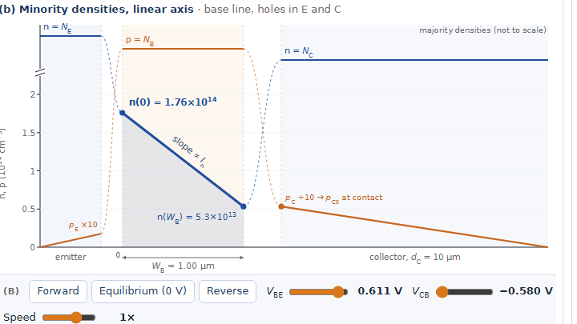
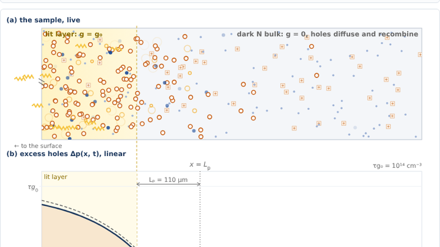
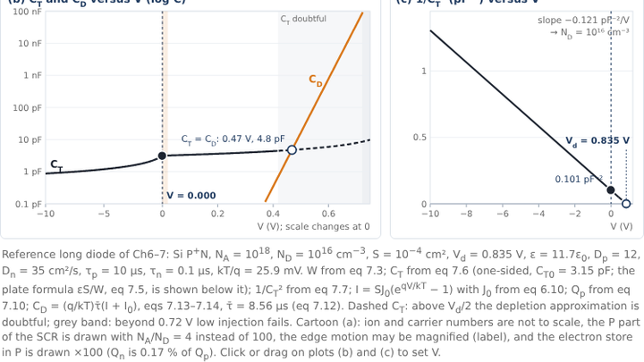

INTERACTIFS
Interactifs
Six animations pour le cœur du cours, chapitres 4 à 8. Ce ne sont pas les figures du polycopié : elles montrent les mécanismes en mouvement. Tout est calculé à partir des équations du cours, avec sa jonction et son transistor de référence ; chacune se trouve aussi dans son chapitre, à la section qu’elle illustre.
 Chapitre 5La jonction PN se forme : une expérience de penséeMettez en contact un morceau P et un morceau N et regardez la jonction se construire d’elle-même : les porteurs diffusent, des ions deviennent non compensés, le champ croît et la dérive croît avec lui jusqu’à compenser la diffusion.
Chapitre 5La jonction PN se forme : une expérience de penséeMettez en contact un morceau P et un morceau N et regardez la jonction se construire d’elle-même : les porteurs diffusent, des ions deviennent non compensés, le champ croît et la dérive croît avec lui jusqu’à compenser la diffusion.
Chapitre 8Le transistor NPN : VBE fixe la pente, VCB ne fait rien jusqu’à…Réglez VBE et VCB et voyez en même temps la droite des électrons dans la base, la bosse de trous dans le collecteur, et le point sur la caractéristique IC en fonction de VCB avec ses paliers.. Chapitre 6Injection et courant : la jonction polariséePartez de la jonction formée au chapitre 5 et polarisez-la, de l’inverse au direct.
Chapitre 6Injection et courant : la jonction polariséePartez de la jonction formée au chapitre 5 et polarisez-la, de l’inverse au direct. Chapitre 8L’effet Early : le zéro qui se déplace et le point commun −VAAugmentez VCE : la ZCE base–collecteur mord sur la base, le zéro de la droite de base se rapproche de l’émetteur, la pente et IC augmentent.
Chapitre 8L’effet Early : le zéro qui se déplace et le point commun −VAAugmentez VCE : la ZCE base–collecteur mord sur la base, le zéro de la droite de base se rapproche de l’émetteur, la pente et IC augmentent.
Chapitre 4Porteurs hors équilibre : lumière allumée, lumière éteinteLa lumière tombe sur la surface d’un échantillon de type N.
Chapitre 7La jonction stocke de la charge : CT et CDDéplacez la polarisation et ajoutez un petit signal.